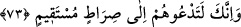

verdiği ve vereceği sayesinde onların ihsanlarından müstağnî olursun.
“
(masraf/gider)” gelirin karşılığıdır. Başkasına çıkarıp verdiğin her şeye denir. “
” ise çoğunlukla arâzî vergisi için kullanılır. Bu kelimede çokluğa ve zorunluluğa
işâret vardır. Onun için daha etkilidir. Bu sebeple Allah’ın Peygamberimize ihsânı
onunla ifâde edilmiştir.
Tefsîru’l-Münâsebât’ta der ki: “Allah, cayması olmayan bir vaad ile herkesin rızkını
vermeyi kendisine vâcib kıldığına işâret olmak üzere ihsânını sanki o bir vergiymiş
(harâc) gibi isimlendirmiştir.
“O, rızık verenlerin en hayırlısıdır.” Yâni bir amele karşılık verenlerin en
hayırlısıdır. Çünkü O’nun ihsânı sona ermez ve bozulmaz. Bu ifâde Allah’ın ihsanının
hayırlı olduğunu bildirmektedir.
et-Te’vîlâtü’n-Necmiyye’de der ki: “Bu âyette işâret vardır ki ilimde ileri giden
ulemâ-i billâh, Allah ile, Allah için halkı Allah’a dâvet konusundaki muâmelelerinde
kalblerinin parıldayan yüzlerini iyi-kötü dünyevî ve uhrevî tamahlarla kirletmezler.”
Sa‘dî (k.s.) der ki:
Tefsir bilen bir adam zararlı çıkar
İlmi ve edebi ekmek karşılığı satarsa
Hz. Şeyh-i Ekber (k.s.) el-Fütûhâtü’l-Mekkiyye’de şöyle der: “Bizim görüşümüze
göre vâiz insanlara yaptığı vaazdan dolayı ücret alabilir. Alınmaması daha fazîletli olsa
da bu ücret, onun yediği şeylerin en helâllerindendir.” Bunun îzahı şöyledir: “Allah’a
dâvet makamı ücreti gerektirir. Çünkü Allah’a dâvet eden hiçbir nebî yoktur ki, “Benim
ücretim ancak Allah’a aittir” (Yûnus, 10/72) dememiş olsun. Böylece dâvetin
karşılığında bir ücret olduğunu belirtmiştir. Ancak bu ücreti mahlûktan değil de
Allah’tan almayı tercih etmiştir.
73. Gerçek şu ki sen onları doğru bir yola çağırıyorsun.
“Gerçek şu ki sen onları” selim akılların dosdoğru olduğuna şâhitlik ettiği,
kendisinde seni itham etmelerini gerektirecek bir eğrilik bulunmayan “doğru bir yola
çağırıyorsun.”